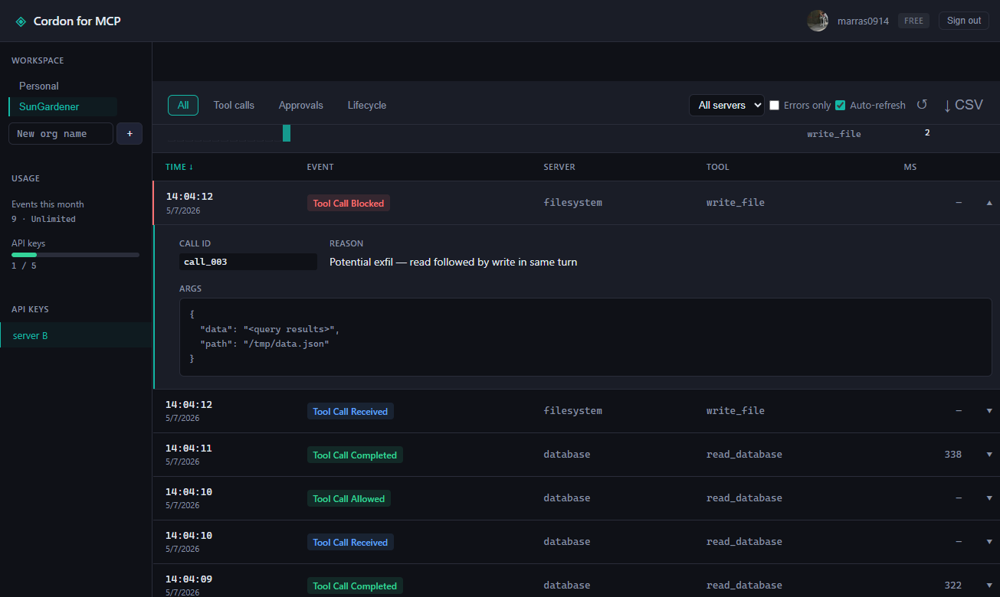

That's exfiltration in two steps, and per-tool allowlists can't see it. Cordon tracks the call graph inside an agent turn and blocks the shape of the attack — not just individual tools.
Glob the names, match the order.
policy: {
sequences: [
{
pattern: ['read_*', 'write_file'],
action: 'block',
reason: 'Potential exfil — read followed by write in same turn'
}
]
}
read_data succeeds. write_file succeeds. The sequence gets caught.
No other MCP gateway does this at the policy layer.
Cordon is a transparent proxy. It requires no changes to your existing MCP servers
or Claude Desktop config — cordon init handles the wiring.
Claude Desktop --stdio--? Cordon --stdio--? MCP server A
--stdio--? MCP server B
--stdio--? MCP server N
Any MCP client, any MCP server. Cordon speaks stdio — the transport every
major client already uses. cordon init auto-patches supported
clients; others drop in with a one-line config change.
Using an MCP server? If it runs over stdio, Cordon proxies it — no server-side changes required.
Block entire tool categories or specific tools by name. Reads pass, writes require approval — or block everything except an explicit allowlist.
Dangerous operations pause and wait. Approve or deny from the terminal or a Slack channel before anything runs.
Every tool call — args, result, policy decision, timestamp — logged to a file or shipped to the hosted dashboard.
Centralized audit logs across your team. Manage API keys, view call history, export for compliance.
Every call streams to the hosted dashboard. The same call-graph block from the hero lands as a red row in the audit log — args, reason, and the rule that fired all in one place.

npm install -g @getcordon/clicordon init// cordon.config.ts
import { defineConfig } from '@getcordon/policy';
export default defineConfig({
servers: [
{
name: 'my-db',
transport: 'stdio',
command: 'npx',
args: ['-y', '@my-org/db-mcp'],
policy: 'approve-writes',
tools: {
drop_table: { action: 'block' },
},
},
],
});cordon startWe're looking for a handful of teams to work closely with as we build out the enterprise features — centralized policy management, SSO, compliance exports. Early partners shape the roadmap and get priority support.
Get in touch →